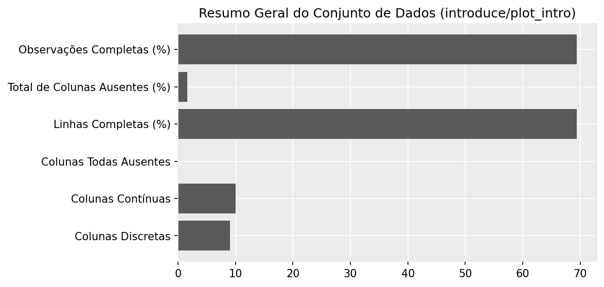
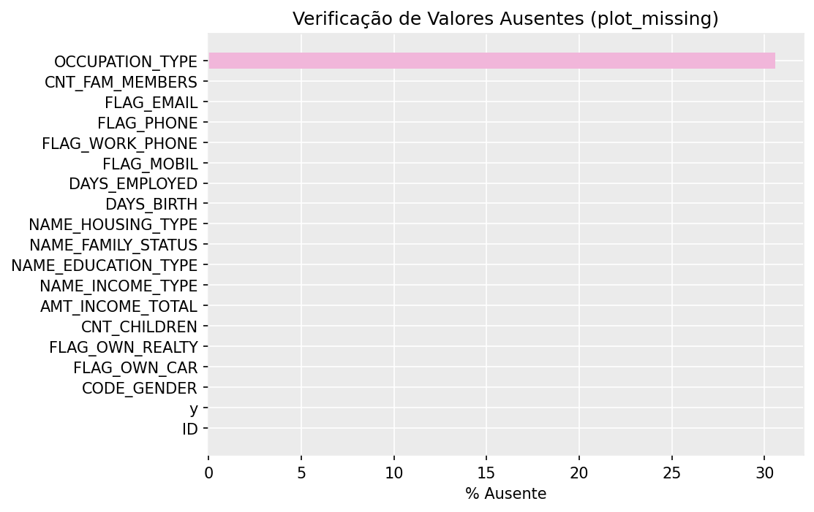
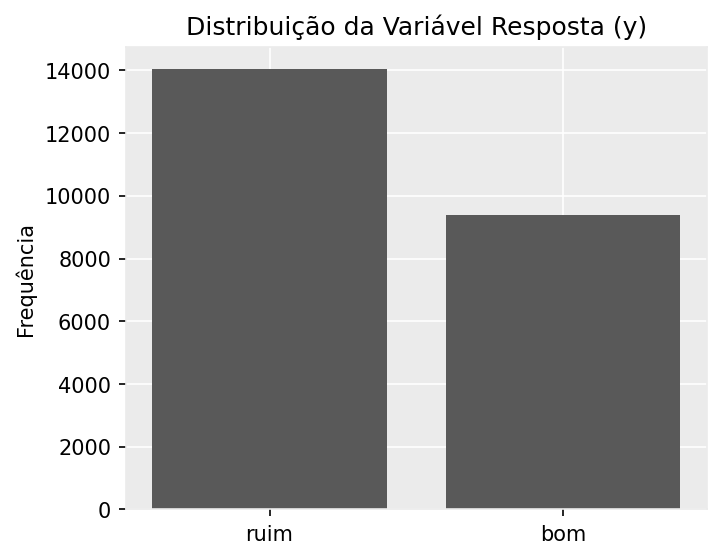
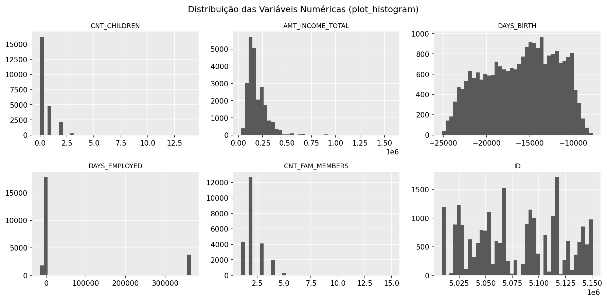
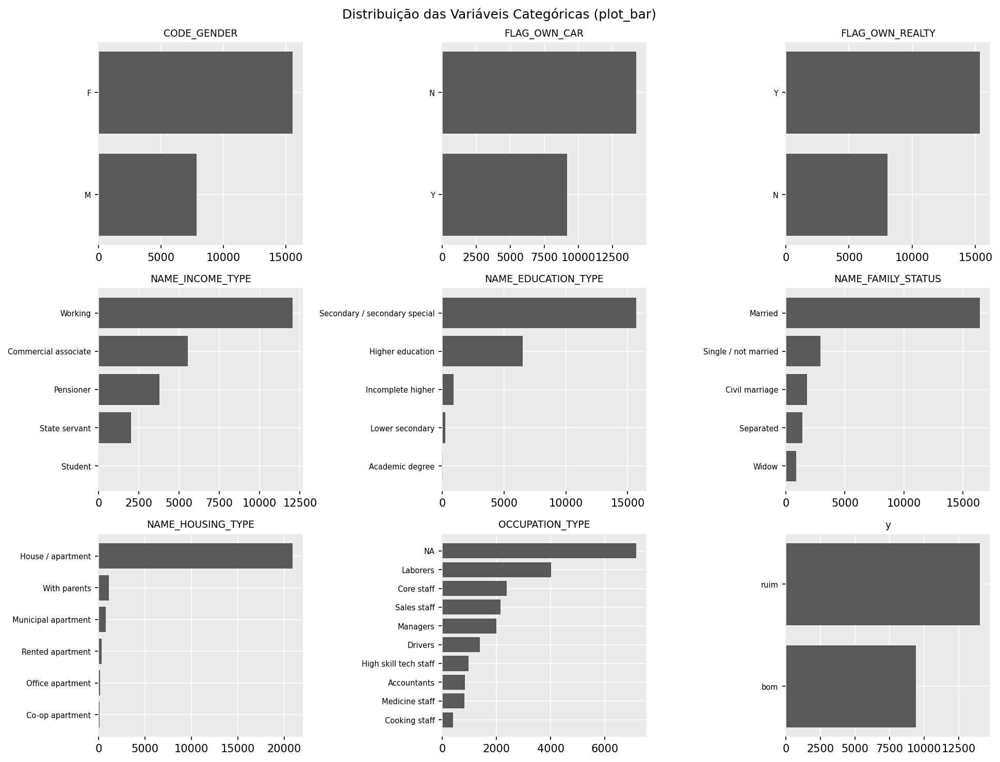
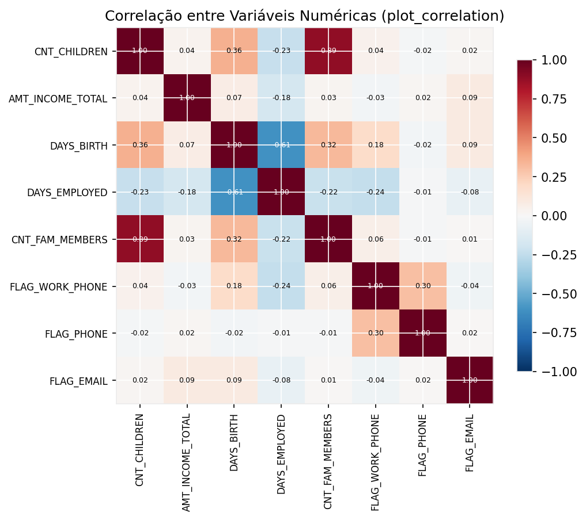
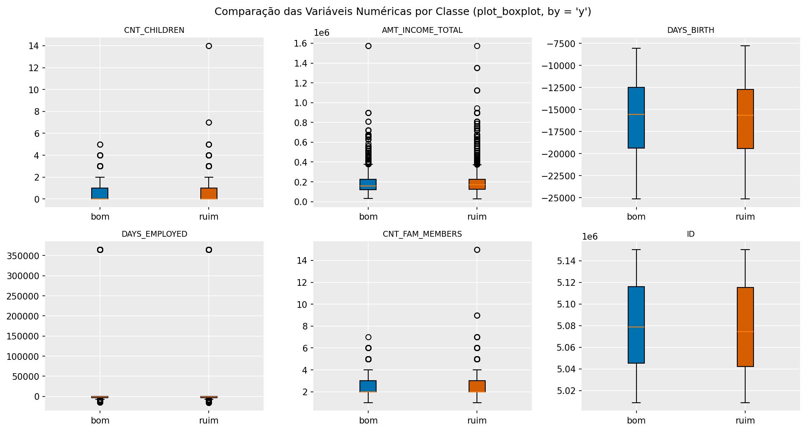

Estudo de Caso: Crédito e Cobrança
Introdução
Este estudo de caso utiliza a base Credit Card Approval Prediction, disponível no Kaggle, composta por duas tabelas:
application_record: dados cadastrais dos solicitantes de cartão de créditocredit_record: histórico mensal de pagamento (status de atraso) de cada cliente
O desafio central é construir a própria variável resposta (“bom” ou “mau” pagador) a partir do histórico de pagamentos, para então modelar a concessão de crédito — um exemplo real de como, em problemas de negócio, o y de um modelo nem sempre está pronto na base.
Pontos de destaque discutidos a partir deste caso:
- Tratamento de cadastros duplicados
- Cuidado com data leakage: a definição do y deve usar apenas informações prévias à concessão do crédito
- Uso de
anti_join/inner_joinpara compor a base final de modelagem - Variáveis sensíveis (raça, gênero, idade, religião, etc.) que são expressamente vedadas em modelos de crédito, tanto pela legislação norte-americana (Equal Credit Opportunity Act) quanto pela regulação do Banco Central do Brasil (BACEN)
Contexto de negócio relacionado: Crédito e Cobrança.
Construção da Variável Resposta (Y)
Abaixo, o código completo (0_load_create_y.R) que trata os cadastros duplicados, explora o histórico de pagamentos e constrói a variável resposta (“bom” ou “mau” pagador):
# Base presente em https://www.kaggle.com/datasets/rikdifos/credit-card-approval-prediction
# Tarefa: "Build a machine learning model to predict if an applicant is 'good' or 'bad' client, different from other tasks, the definition of 'good' or 'bad' is not given."
library(dplyr)
library(readr)
library(janitor)
application_record <- read_csv('data/application_record.csv')
credit_record <- read_csv('data/credit_record.csv')
# application_record: dados cadastrais
# credit_record: histórico de crédito
# Olhando a base de cadastro ----
# Temos dados duplicados cadastrais?
application_record %>% get_dupes(ID) # Temos!
application_record %>% get_dupes(ID) %>% select(ID) %>% n_distinct() # Temos 47 pessoas duplicadas dentre 438510 pessoas
application_record %>% filter(ID == '7024111')
# Como não sabemos a linha correta de cada cliente (nem as eventuais datas de atualização cadastral), uma solução factível é dropar essas pessoas, devido ao baixo número dessas ocorrencias.
# Nota: estamos supondo que a base não tem data leakage, ou seja, são informações cadastrais PRÉVIAS à concessão de crédito.
# Neste caso, o "anti_join" vai ser muito útil :)
ID_duplicados <- application_record %>% get_dupes(ID) %>% select(ID) %>% distinct()
application_record_unicos <- application_record %>% anti_join(ID_duplicados)
# Nota importante: Um destaque interessante do sistema jurídico norte-americano é que informações
# como raça, gênero, idade, religião, entre outras, são expressamente proibidas de serem
# consideradas nas definições de termos de crédito, conforme determina o Equal Credit
# Opportunity Act de 1976.
# (https://portal.unimar.br/site/public/pdf/dissertacoes/595A37243A61B8D7FCAD52829C604839.pdf)
# No Brasil, o BACEN também audita sobre variáveis sensíveis em modelo de crédito
# Olhando a base de crédito ----
head(credit_record)
# Explicação dessa base em https://www.kaggle.com/code/rikdifos/eda-vintage-analysis
# ID: número do cliente
# MONTHS_BALANCE: O mês dos dados extraídos é o ponto de referência. A contagem é feita retroativamente: 0 corresponde ao mês atual (da extração), -1 ao mês anterior, -2 a dois meses antes, e assim por diante.
# STATUS:
# 0: atraso de 1 a 29 dias
# 1: atraso de 30 a 59 dias
# 2: atraso de 60 a 89 dias
# 3: atraso de 90 a 119 dias
# 4: atraso de 120 a 149 dias
# 5: dívida em atraso ou inadimplente, com baixa contábil (write-off), por mais de 150 dias
# C: pagou aquele mês
# X: não havia empréstimo tomado naquele mês
# Pra facilitar, vamos criar uma coluna com as descrições
credit_record <- credit_record %>%
mutate(desc_STATUS = case_when(
STATUS == "0" ~ "atraso de 1 a 29 dias",
STATUS == "1" ~ "atraso de 30 a 59 dias",
STATUS == "2" ~ "atraso de 60 a 89 dias",
STATUS == "3" ~ "atraso de 90 a 119 dias",
STATUS == "4" ~ "atraso de 120 a 149 dias",
STATUS == "5" ~ "dívida em atraso ou inadimplente, com baixa contábil (write-off), por mais de 150 dias",
STATUS == "C" ~ "pagou aquele mês",
STATUS == "X" ~ "não havia empréstimo tomado naquele mês",
TRUE ~ NA_character_
))
credit_record %>% count(STATUS)
credit_record %>% count(MONTHS_BALANCE) # Temos até 5 anos de acompanhamento (podemos, inclusive, ter clientes antigos e recentes)
# Como definir o Y?
# Vamos avaliar alguns clientes que mais tem histórico:
credit_record %>% count(ID) %>% arrange(desc(n))
credit_record %>% filter(ID == '5001730') %>% arrange(MONTHS_BALANCE)
credit_record %>% filter(ID == '5002160') %>% arrange(MONTHS_BALANCE)
# Vamos analisar um cliente "potencialmente" ruim e ver a evolução dele:
credit_record %>% filter(STATUS == '3') %>% distinct(ID)
credit_record %>% filter(ID == '5002126') %>% arrange(MONTHS_BALANCE)
# Um pouco inconsistente a evolução dele, supondo que teria somente um contrato de empréstimo
# Tem algum cliente nessa base que nunca tomou crédito?
credit_record %>%
group_by(ID) %>%
summarise(only_x = all(STATUS == "X"), .groups = "drop") %>%
filter(only_x)
# Sim! Estranho!
credit_record %>% filter(ID == '5001713')
# Faz sentido eles estarem presentes na modelagem? Eles podem sujar a relação entre as covariáveis e a variável resposta. Isto é, eu não consigo classificar ele como "bom" ou "mau" pagador.
# Outro caso estranho: atrasos de 1 a 29 dias e depois não havia mais empréstimo.
credit_record %>% filter(ID == '5001711')
# O que faz sentido, é uma pessoa que pegou algum empréstico e nunca atrasou ou atrasou pouco. Por exemplo:
credit_record %>%
group_by(ID) %>%
summarise(only_c0 = all(STATUS == "C" | STATUS == "0"), .groups = "drop") %>%
filter(only_c0)
credit_record %>% filter(ID == '5001728')
credit_record %>% filter(ID == '5001734')
# No entanto, vamos considerar somente clientes que tem mais de 12 meses na base.
# Pra isso, o inner_join vai ser útil :)
ids_com_mais_tempo <- credit_record %>% count(ID) %>% filter(n > 12) %>% select(ID) %>% distinct()
credit_record_com_mais_tempo <- credit_record %>% inner_join(ids_com_mais_tempo)
# Verificando novamente o critério de "pegou algum empréstico e nunca atrasou ou atrasou pouco":
credit_record_com_mais_tempo %>%
group_by(ID) %>%
summarise(only_c0 = all(STATUS == "C" | STATUS == "0"), .groups = "drop") %>%
filter(only_c0)
credit_record %>% filter(ID == '5001712')
credit_record %>% filter(ID == '5001717')
credit_record %>% filter(ID == '5001719')
# Criando o y:
ids_bons <- credit_record_com_mais_tempo %>%
group_by(ID) %>%
summarise(only_c0 = all(STATUS == "C" | STATUS == "0"), .groups = "drop") %>%
filter(only_c0) %>%
select(ID) %>%
distinct() %>%
mutate(y = "bom")
head(ids_bons)
ids_ruins <- credit_record_com_mais_tempo %>%
anti_join(ids_bons)%>%
select(ID) %>%
distinct() %>%
mutate(y = "ruim")
y_final <- ids_bons %>% bind_rows(ids_ruins)
y_final %>% count(y)
saveRDS(y_final, 'data/y_final.rds')
saveRDS(application_record_unicos, 'data/application_record_unicos.rds')Note como o código explora interativamente a base (filter, count, arrange em clientes específicos) antes de fechar a regra de negócio que define o y: um cliente é “bom” pagador se, em mais de 12 meses de histórico, nunca teve status de atraso (STATUS diferente de "C" ou "0"); caso contrário, é “mau” pagador. Note também o uso combinado de anti_join (para remover cadastros duplicados e, depois, para isolar quem não é “bom”) e inner_join (para filtrar apenas quem tem histórico suficiente) — o mesmo tipo de raciocínio de JOINs apresentado na seção de Joins.
Análise Exploratória
Com o y já construído e salvo (y_final.rds), o código abaixo (1_descriptive.R) une essa variável resposta aos dados cadastrais e usa o pacote DataExplorer para uma varredura exploratória rápida — estrutura das variáveis, valores ausentes, distribuições e correlações:
library(dplyr)
library(readr)
library(janitor)
library(DataExplorer)
y_final <- readRDS('data/y_final.rds')
application_record_unicos <- readRDS('data/application_record_unicos.rds')
combinado <- y_final %>% inner_join(application_record_unicos)
dim(combinado)
# Resumo geral do conjunto de dados
introduce(combinado)
# Visão geral do dataset
plot_intro(combinado)
# Estrutura e tipos das variáveis
plot_str(combinado)plot_str() gera um diagrama de árvore (via igraph) com a estrutura aninhada de tipos de colunas — não reproduzido nesta página por não ser, tecnicamente, um gráfico ggplot2.
# Verificação de valores ausentes
plot_missing(combinado)
# E muito comum no meio de banco a informação de ocupação ser a mais "pobre" em termos de dados "confiáveis", tanto em termos de missing quanto de atualização. As pessoas em geral, trocam de emprego com alta frequência.
Confirmando o comentário do script: OCCUPATION_TYPE é, de fato, a única coluna com valores ausentes na base combinada (cerca de 30%) — um exemplo prático do tipo de inconsistência discutido na página de Desafios de Bases Alinhadas ao Negócio.
# Distribuição da variável resposta
plot_bar(combinado["y"])
# Distribuição das variáveis numéricas
plot_histogram(combinado)
# Distribuição das variáveis categóricas
plot_bar(combinado)
# Correlação entre variáveis numéricas
plot_correlation(combinado)
# Comparação das variáveis numéricas por classe
plot_boxplot(combinado, by = "y")
# # Relatório HTML completo da análise exploratória
# create_report(combinado)
Todos os gráficos acima foram gerados a partir da base real (application_record.csv + credit_record.csv, já com a mesma regra de negócio de duplicidade e construção do y mostrada acima) — e confirmam, na prática, o comentário do próprio script sobre a variável de ocupação (OCCUPATION_TYPE): é comum, em bases de crédito, que justamente esse tipo de variável cadastral seja a mais “suja”/desatualizada, já que pessoas trocam de emprego com frequência.
Modelagem
Por fim, o código (1_ML.R) remove as variáveis que não fazem sentido (ID) ou que são sensíveis (CODE_GENDER, gênero — vedada em modelos de crédito, como discutido na Introdução acima), e repete a mesma estratégia de modelagem vista no estudo de caso da Olist: AutoML do H2O com validação cruzada, avaliado por AUC/curva ROC, importância de variáveis e dependência parcial:
library(dplyr)
library(readr)
library(janitor)
library(DataExplorer)
library(h2o)
library(PRROC)
y_final <- readRDS('data/y_final.rds')
application_record_unicos <- readRDS('data/application_record_unicos.rds')
combinado <- y_final %>% inner_join(application_record_unicos)
# Lembrando: devemos retirar variáveis sensíveis de uma modelagem de crédito
# Setando y como numérico (1 - ruim, 0 - bom)
base_model <- combinado %>%
select(-ID) %>% # Não faz nenhum sentido incluir o ID como covariável
select(-CODE_GENDER) %>% # Variável sensível
mutate(y = case_when(
y == "bom" ~ 0,
y == "ruim" ~ 1))
set.seed(1234)
n_treino = floor(0.7 * nrow(base_model))
train_ind = sample(seq_len(nrow(base_model)), size = n_treino)
base_treino <- base_model[train_ind,]
base_teste <- base_model[-train_ind,]
cat('n Base Treino: ', nrow(base_treino), '\n',
'n Base Teste: ', nrow(base_teste), '\n',
'n Base Total: ', nrow(base_model))
h2o.init() # Necessário Java 64-bit
df_treino <- base_treino %>%
mutate(y = as.factor(y)) %>%
mutate_if(is.character, factor)
df_teste <- base_teste %>%
mutate(y = as.factor(y)) %>%
mutate_if(is.character, factor)
df_frame_treino <- as.h2o(df_treino)
df_frame_teste <- as.h2o(df_teste)
automl_model <- h2o.automl(
y = 'y',
balance_classes = TRUE,
training_frame = df_frame_treino,
nfolds = 4,
max_runtime_secs = 60 * 1, # Tempo Máximo de k minutos: 60 * k
#include_algos = c('DRF', 'GBM', 'XGBoost'),
exclude_algos = "StackedEnsemble", # Importância Global de Modelos Stacked não são triviais
sort_metric = "AUC",
seed = 1234)
lb <- as.data.frame(automl_model@leaderboard)
View(lb)
aml_leader <- automl_model@leader
#h2o.saveModel(object = aml_leader,
# path = 'data/models',
# force = TRUE)
# Melhorou a métrica AUC no Holdout set?
pred <- h2o.predict(object = aml_leader, newdata = df_frame_teste) %>%
as.data.frame() %>%
pull(p1)
# Checando AUC e plotando a curva ROC
PRROC_obj <- roc.curve(scores.class0 = pred,
weights.class0 = base_teste$y,
curve = TRUE)
plot(PRROC_obj)
# Gráfico de Importância de Variância
h2o.varimp_plot(aml_leader)
# Dependência Parcial com relação a algumas variáveis
h2o.partialPlot(object = aml_leader,
data = df_frame_treino,
cols = "DAYS_BIRTH")
h2o.partialPlot(object = aml_leader,
data = df_frame_treino,
cols = "AMT_INCOME_TOTAL")
h2o.partialPlot(object = aml_leader,
data = df_frame_treino,
cols = "OCCUPATION_TYPE")
h2o.shutdown()Note que, diferentemente do exemplo da Olist (onde a variável resposta já era numérica desde a etapa de transform), aqui o y categórico (“bom”/“ruim”) é recodificado para numérico (0/1) já dentro do próprio script de modelagem — outro lembrete de que a fronteira entre as etapas do CRISP-DM costuma ser fluida na prática.